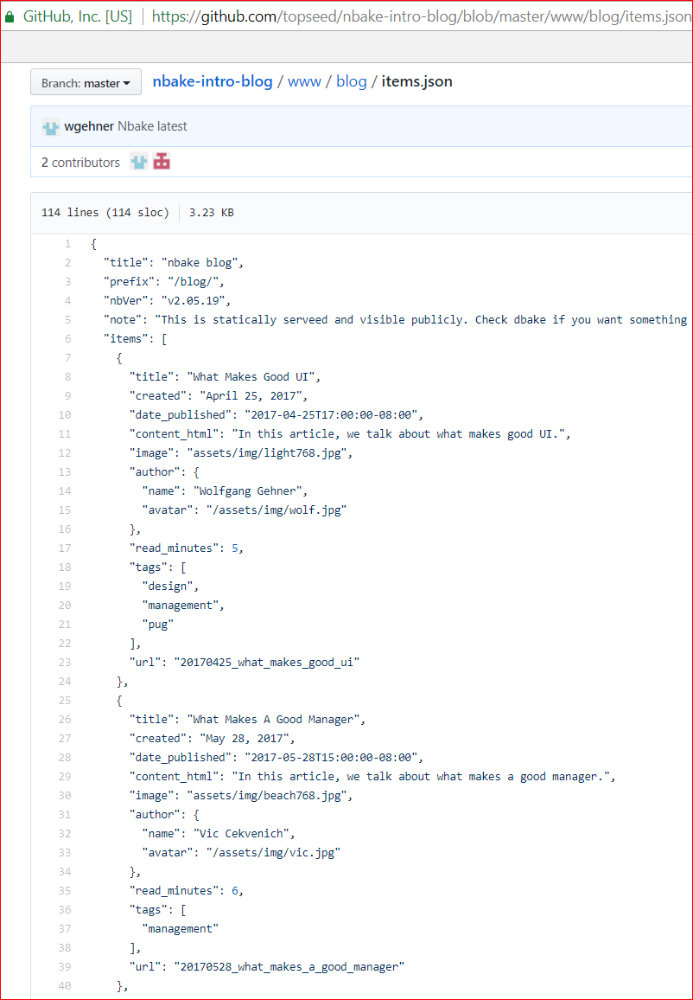
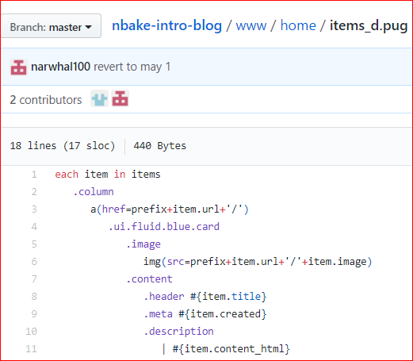
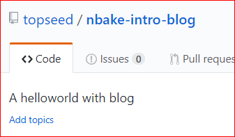

Join YAML files into one JSON file - to fetch.
ex: nbake -i .
Pug does dynamic binding also, out of the box - in the browser.
Like Mustache, doT.js, etc. etc.
ex: nbake . // looks for _d.pug and assumes it's dynamic.
Another example app: blog - like static gen.
Can be any item. Ex: Trucker DB.
CSS